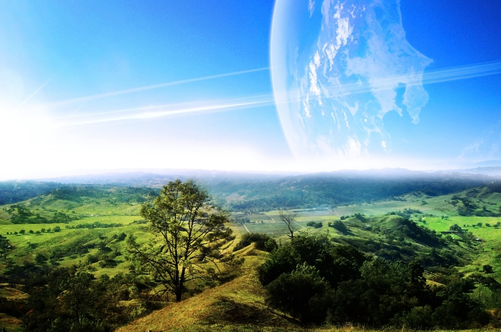
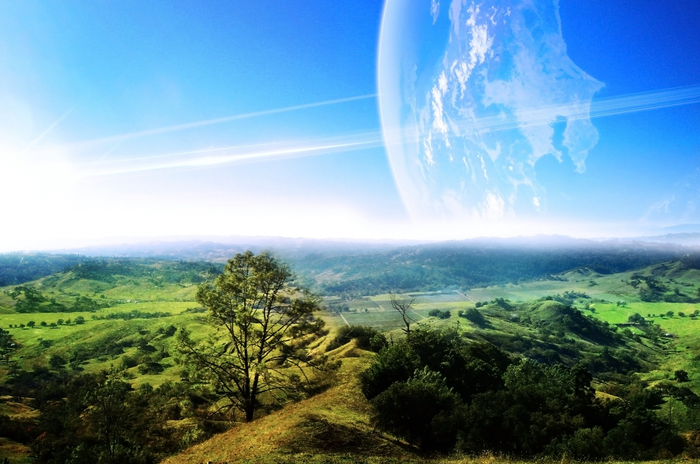

GreenPark
In a sea of skyscrapers, miles of concrete, traffic jams and smog, there are oases for residents and visitors to enjoy Mother Nature. We're talking about city parks with plenty of grassy areas to enjoy a picnic, trails for a long walk or afternoon jog, and often lakes for a romantic boat ride.
Many of these parks are also filled with museums and attractions that hold a key to the city's heritage. Here are the best city parks in the world, beginning with the smallest and climbing 100 times in size to the largest.
 
